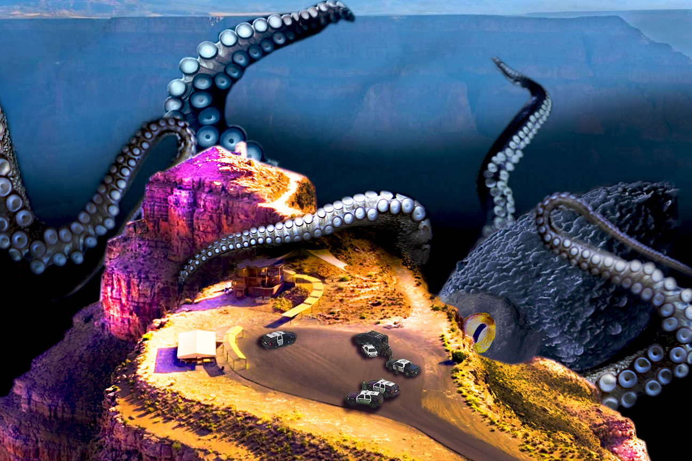

Tentacles and Terror
As a way to finish my Photoshop class with a bang, I decided to try and make a piece including a large karaken, or octopus- like creature attacking a mountaintop with a swarm of people underneath. Since our objective was to use fantasy elements I figured it would be appropriate, and a good challenge for me to take on since I wasn't completely fluent in image editing.
As fun as my concept is I know my execution was very poorly done; none of the colors seem to match very well both in saturation or brightness, nothing seems to stand out or look visually appealing, and the police cars are by far one of the worst elements. I had hoped to put a whole crowd in there, but I fel flat when I realized I couldn't find much from that angle to match the rest of my piece.
While I'm not in love with it, I still had a lot of fun making the piece, and I still think my idea is stellar. While I don't think I'd ever revisit it in photoshop I definitley think it could make for a fun poster or painting, and might use this as reference for a future piece that I wouldn't do digitally.